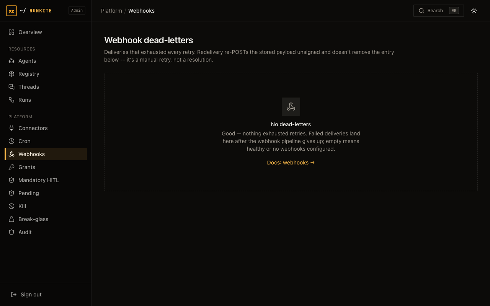

Operate
Webhooks
The plane can notify your systems when runs change — with dead-letter visibility when delivery fails.
What it is
Configured HTTP callbacks for run lifecycle (and related) events. Failed deliveries land in a dead-letter view in Admin so ops is not guessing from runner logs.
Why it is here
Product UIs and automations need push, not only poll. Keeping delivery on the plane means one audit trail and one retry story.
How to implement
- Configure webhook endpoints in plane config (see deployment / configuration docs).
- Expose an HTTPS receiver that acknowledges quickly (2xx).
- Watch Admin → Webhooks / dead-letters for failures.
- Fix the receiver or auth, then replay/retry per ops runbook.
In the product
Admin → Webhooks — dead letters / delivery

What to expect
- Success — your endpoint gets signed/authenticated POSTs as runs progress.
- Failure — dead-letters accumulate instead of silent drop.
- Limits — treat receivers as idempotent; at-least-once delivery is the honest model.
Reference: docs/admin.md · docs/configuration.md · Ops